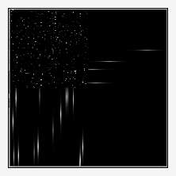

This command is an adaptation of the -blur command in that it smears the image pixel only along the depth dimension. It is not especially useful for single slice images.
For multiple-slice images, blur_z convolves an image along the z axis and preserves the other two axes. The -display of a small star field depicted on the left illustrates the effect. While the pixels are sharp in the X-Y plan in the upper right quadrant, both the Y-Z elevation in the upper left quadrant and the X-Z elevation in the lower right quadrant show how each white pixel has smeared through the depth of the volume. Scrubbing through this image with the -display command (CTRL-P) will produce a twinkling star animation.
The format of the command is:
-blur_z amplitude[%]>=0,_boundary={ 0=dirichlet | 1=neumann }
There are those here who cannot look at a single pixel without thinking "impulse!", a kind of signal which causes convolution kernels to take snapshots of themselves. The -convolve command makes note of this phenomenon in its 'Application' section.
For us, it means that the winking star field noted in the introduction can serve as a template for all manner of winking things, which can get horrific. The general plan here is to give -convolve a happy face kernel (hface.png). Wherever it finds an impulse among the various slices, it will be replaced with a happy face. The happy face will reflect the intensity of the inpulse; these wax and wane along the z axis, thanks to the blur_z command, so when impulses give way to happy faces, they too will wax and wane.